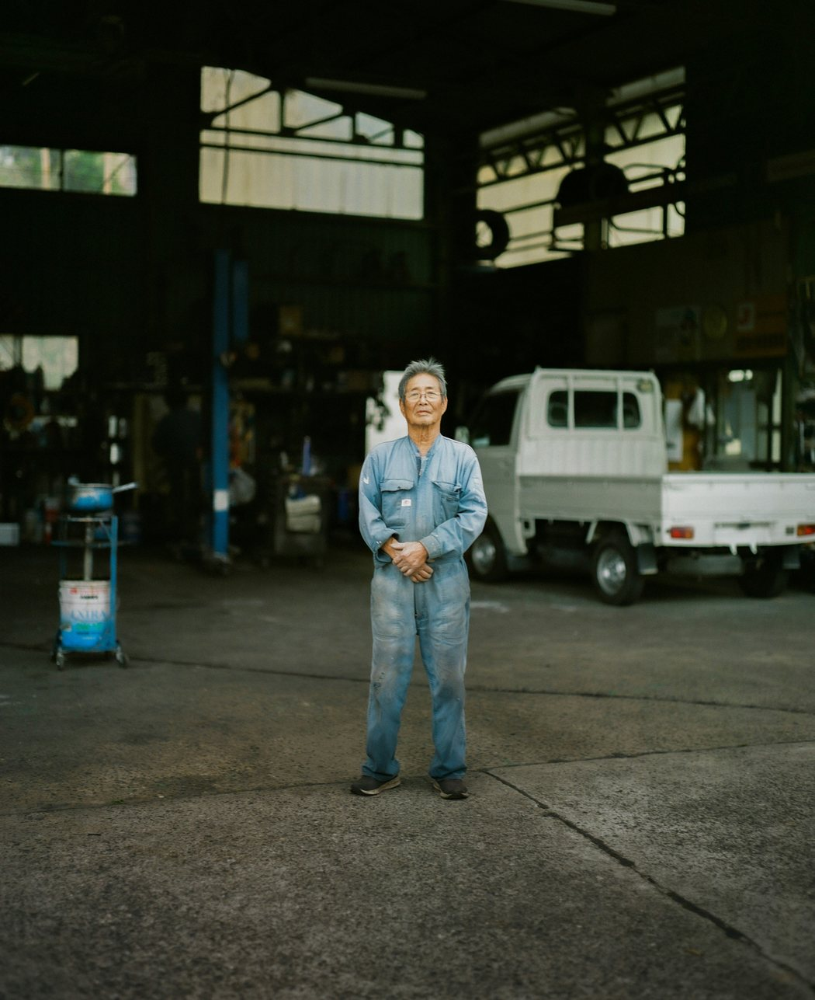
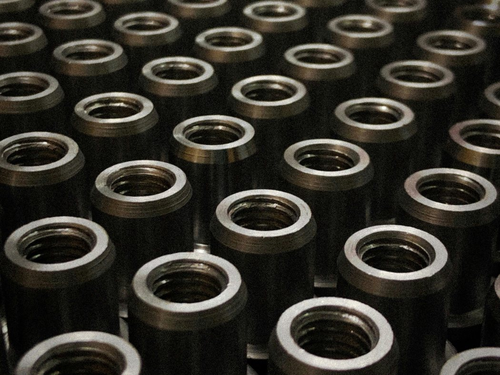
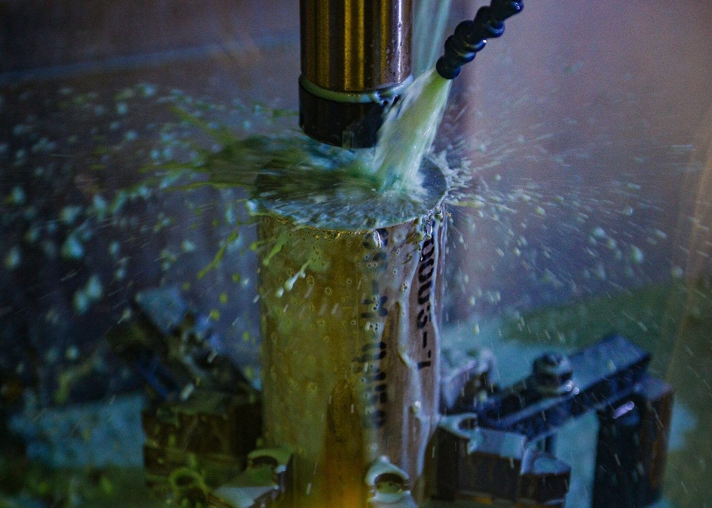
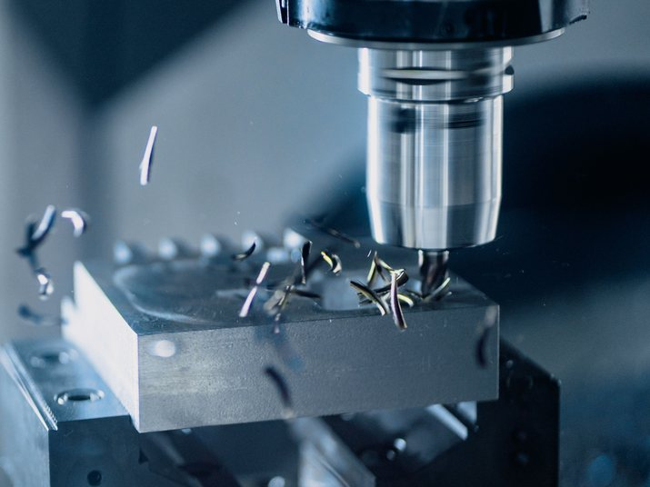
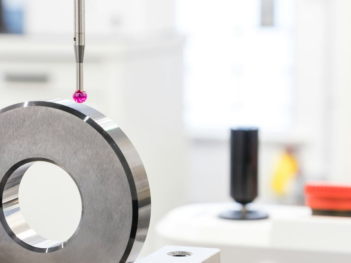
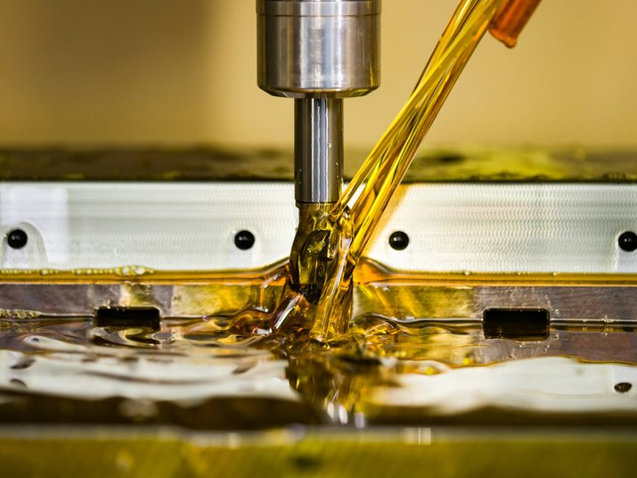
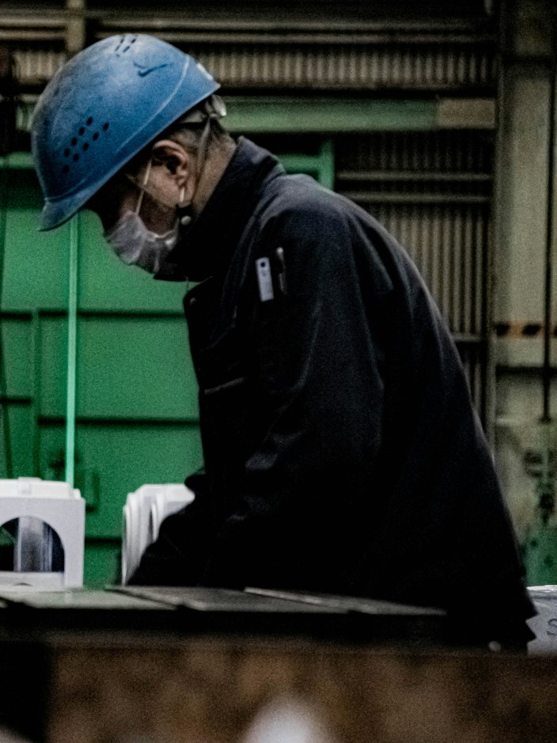
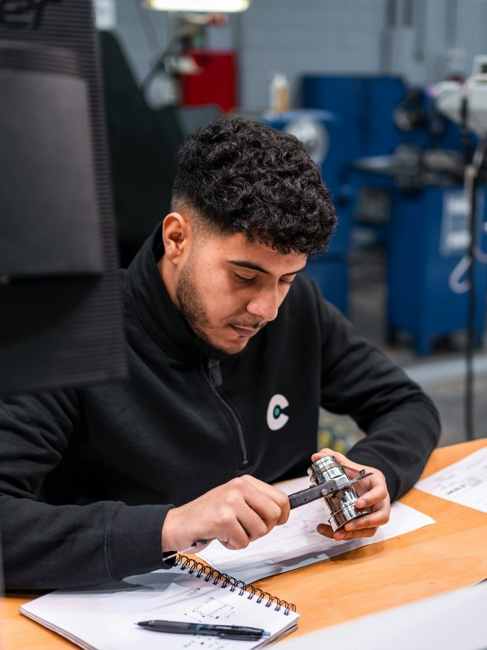
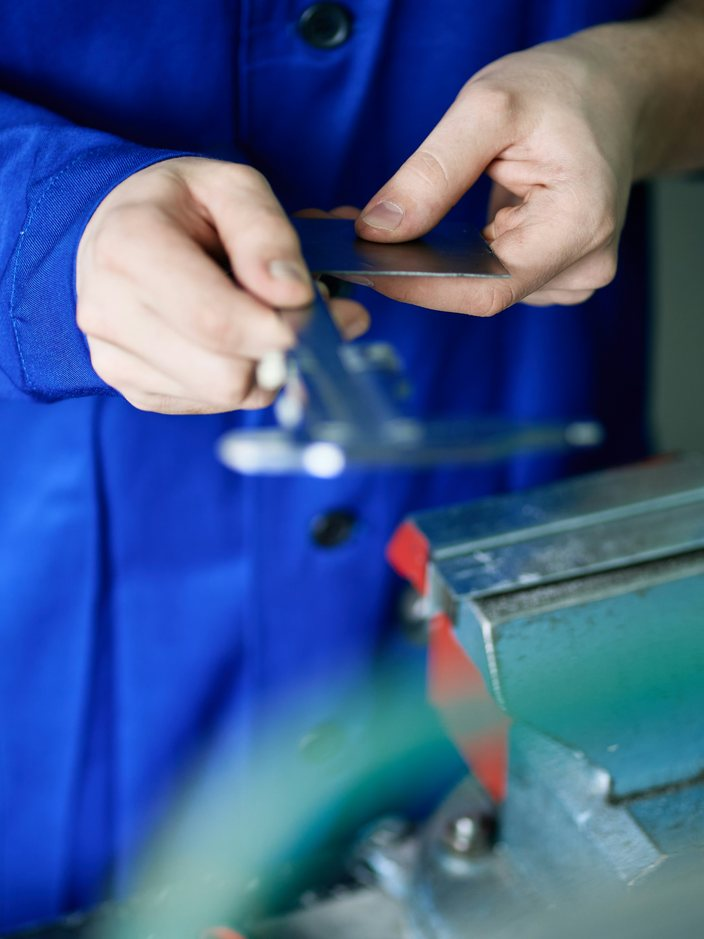

旋盤工、求む。
経験不問。
- 静岡県磐田市
- 機械加工・正社員
- 加工担当14名中9名が未経験で入社
- 月給218,000円〜
10月の工場見学のお知らせ
見学のご案内へ →
Message先輩の多くは
未経験からのスタートでした。
私たち桑水流精機は、静岡県磐田市で建設機械や農業機械の油圧部品を削っている町工場です。削った部品の大半は、工事現場で見かける油圧ショベルのアームなどを動かす油圧シリンダーに組み込まれます。
難しそうに聞こえるかもしれませんが、いまこの部品を削っている社員の多くは、介護や運送、飲食などの仕事から転職してきました。入社後は教育係の先輩が1人つき、安全ルールと図面の読み方から教えます。機械を1台任せるまでには、半年ほどかけます。
旋盤が初めてで不安な方は、まずは工場を見に来てください。応募するかどうかは、そのあとで決めていただいて構いません。皆さんにお会いできるのを楽しみにしています。

Company地元の取引先から
長く仕事をいただいています。
仕事をいただいている取引先はすべて県内の会社で、そのうち1社とは、1974年から50年以上のお付き合いが続いています。削っているのは、ピストンやブッシュなどの油圧部品です。

Work削る部品は
毎日替わります。
工場全体では2025年度の平均で月に約4万個の部品を削っていますが、1つの品番あたりの数は、多くの場合50個から200個です。削り終えたら次の品番に合わせて、材料を固定する治具（じぐ）と刃物を付け替えます。この「段取り替え」が、1人あたり1日に1〜2回あります。
慣れてくると1人で3台の機械を受け持ち、1台が削っている間に別の機械の段取りを進めます。



Number数字で見る桑水流精機
創業
1968年
磐田で58年。
従業員数
34名
加工担当14名、検査担当6名、生産管理・営業・総務などで14名。
未経験からの入社
9名
加工担当14名のうち9名で、前職は介護や運送、飲食などです。
年間休日
122日
2026年度の予定です。
残業
11時間／月平均
2025年度の全社員平均です。いちばん多かった月でも、平均は25時間でした。
有給取得
13.2日／年平均
2025年度の全社員平均です。
人数は2026年8月時点です。
People先輩の声

加工担当｜2022年入社｜前職／介護
刃が欠ける前の音が分かるようになりました。
介護の仕事は夜勤があったので、生活のリズムを整えたくて、日勤だけのこの会社に転職しました。最初の3か月は、機械の音がどれも同じに聞こえていました。それでも、いつも隣に先輩がいたので、分からないことはその場で聞いて覚えられました。いまは刃が欠けそうになると、音の違いで分かります。

加工担当｜2023年入社｜前職／運送
焦らず1台ずつ覚えられました。
運送の仕事で腰を痛めてしまい、重いものを運ばずに済む職場を探していました。入社の決め手は工場見学です。削りたての部品を持たせてもらいながら、「手で運ぶのはこのくらいまで、重いものはクレーンを使います」と聞いて、ここなら腰を気にせず働けると思いました。入社前は、早く覚えろと急かされるのではと心配していました。実際には、2台目を任されたのは入社して1年ほどたってからで、自分のペースで覚えられました。4年目のいまは3台を受け持っています。

検査担当｜2021年入社｜前職／組立
平日の夜も家族と過ごせるようになりました。
検査の仕事は初めてで、最初は測定具をうまく当てられず、同じ部品を何度も測り直していましたが、いまでは出荷検査も1人でできるようになりました。前は3交替の工場で組立をしていたので、日勤だけになって、平日の夜も家族と過ごせるのがうれしいです。
Schedule加工担当の一日
朝礼。その日に削る品番と、気をつける寸法を確認します。
午前の加工。前日から続く品番は、段取りを確認してから削り始めます。
昼休み45分。お弁当を持ってくる人が多いです。
午後の加工。段取り替えは、たいていこの時間に行います。
片づけをして、翌日の刃物を準備します。
終業。残業がある日は月に4日ほどです。
10時と15時にも、15分ずつ休憩があります。
Education入社後の教育
- 入社〜1か月
- 安全ルールと図面の読み方教育係の先輩がマンツーマンで教え、測定具の使い方もあわせて覚えてもらいます。
- 〜3か月
- 先輩と一緒に段取り替え先輩の作業を隣で見たあと、先輩に見てもらいながら刃物と治具を自分で替えます。
- 〜半年
- 1台を受け持つ段取りから、削った部品の測定までを担当し、困ったときは機械を止めて先輩を呼びます。
- 〜1年
- 2台を受け持つNC旋盤を動かすプログラムの手直しも覚えます。
- 〜3年
- 3台を受け持ち、新人を教える側へ自分が教わったのと同じ順番で、新人に教えていきます。
Welfare福利厚生
資格取得費用は会社負担
フォークリフトと玉掛け（クレーンに荷を掛ける作業）の技能講習が対象です。
作業服・安全靴・保護めがねを貸与
作業服は夏用・冬用を各2着お貸しします。
年1回の健康診断
勤務時間内に受けられ、費用は会社が負担します。
Recruit募集要項
- 職種
- 機械加工旋盤とマシニングセンタを使い、段取りから加工までを担当します。正社員（中途採用）の募集です。
- 応募資格
- 学歴・年齢・経験は問いません車かバイクで通勤できる方。車の場合、免許はAT限定でも構いません。
- 募集人数
- 2名応募は2026年10月31日まで受け付けます。期間内でも、採用予定人数に達し次第締め切ります。
- 給与
- 月給218,000円〜296,000円経験と資格を考慮のうえ決定します。固定残業代は含みません。通勤手当、残業手当、休日出勤手当は別途支給します。
- 賞与
- 年2回計4.1か月分（2025年度の実績・全社員平均）。
- 昇給
- 年1回（4月）2026年4月の昇給額は、全社員の平均で月額6,200円でした。
- 年収の例
- 約380万円入社3年目・月給236,000円・賞与4.1か月の場合。残業代は含みません。賞与は業績により支給額が変わります。
- 給与の締切日・支払日
- 毎月末日締め、翌月25日払い銀行振込。支払日が休日の場合は前営業日になります。
- 勤務時間
- 8:00〜17:00休憩75分。全員が日勤で、交替勤務はありません。月平均残業時間は11時間（2025年度実績）です。
- 休日
- 年間122日（2026年度の会社カレンダー）土日休み。祝日は出勤日で、その分をお盆・年末年始などの長期休暇にあてています。有給休暇は半日単位で取得できます。
- 試用期間
- 3か月期間中の給与と待遇は、本採用と同じです。
- 勤務地
- 本社工場（静岡県磐田市）転勤はありません。
- 通勤
- マイカー・バイク通勤（無料駐車場45台）通勤手当は、月30,000円を上限に実費を支給します。
- 加入保険
- 各種社会保険雇用保険・労災保険・健康保険・厚生年金保険に加入します。
- 退職金
- 退職金制度あり中小企業退職金共済を利用しています。
- 受動喫煙対策
- 屋内は禁煙屋外に喫煙所があります。
- 応募の方法
- このページのフォームか、お電話でお電話は採用担当（0538-00-0000）までお願いします。履歴書は面接の当日にお持ちいただくか、本社工場の採用担当あてにご郵送ください。手書きでも、パソコンで作成したものでも構いません。写真は必要ありません。
- 選考の流れ
- 応募 → 面接1回 → 結果のご連絡見学当日の面接も可能です。結果は、面接日から1週間以内にご連絡します。
労働条件の明示
- 業務の変更範囲
- 入社時は機械加工。変更の範囲は会社の定める業務で、検査・生産管理・受注・見積も含みます。
- 就業場所の変更範囲
- 磐田市の本社工場のみです。
- 雇用の期間
- 期間の定めはありません。
Visit工場見学のご案内
見学では、動いている機械が部品を削るところをご覧いただけるほか、削る前の材料と仕上がった部品も、その場で手に取っていただけます。
1回の定員は3名で、所要時間は約80分です。質疑応答の時間には、給与や休日のことも遠慮なくご質問ください。
- 会社説明
- 工場内見学
- 質疑応答
- 終了
- 10/7（水）残り2名
- 10/14（水）残り3名
- 10/21（水）残り3名
保護めがね・安全靴・耳栓は当社でご用意しますので、動きやすい服装でお越しください。見学だけでしたら履歴書は必要ありません。工場内の撮影は、取引先との取り決めがあるためご遠慮ください。
本社工場はJR磐田駅から車で約12分です。駅までお迎えにあがりますので、ご希望の方はお申し込みのときにお知らせください。
工場見学に申し込むFAQよくある質問
未経験でも応募できますか？
はい、応募できます。入社後は安全ルールと図面の読み方から覚え、機械に触れるのはそのあとです。
年齢制限はありますか？
年齢制限はありません。実際に、48歳で入社した社員もいます。
資格がなくても応募できますか？
はい、もちろん可能です。フォークリフトと玉掛けの資格は、入社してから技能講習を受けて取得できます。いま加工を担当している社員も、ほとんどが入社してから取得しています。
力仕事ですか？
力仕事はほとんどありません。手で運ぶ部品は5kg以下で、それより重いものはクレーンで動かします。ただし、業務の大半は立ち仕事です。